richmond:4

2024-08 · world 0.39 · pixel 0.39
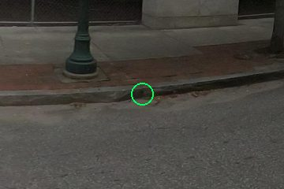
2024-08 · world - · pixel -
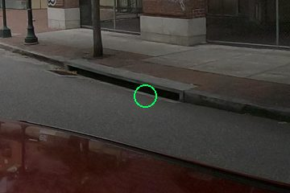
2024-08 · world - · pixel -
Superseded before any verdicts (2026-09-28). Do not rate this page.
Rings in the other views are the GT point projected with a flat-ground 2.6 m camera and often
land beside the ramp, and the one question mixed a fact with a diagnosis. Use
benchmark/multiview_residual_gt_check_48/gallery.html instead; see
docs/multiview_48.md section 8.
Each card is a GT curb ramp that no operational fused site recovered (or a self-detected ramp whose site landed more than 5 m away). The ring marks the GT point in its source view and the same ground point projected into the nearest other captures (projection error is real: p90 about 4.4 m on the ground, so the ring can sit beside the ramp). Pick the one reason that best explains why the model did not deliver this ramp. The captions give the best stored detection at the ramp in that view (world 5 m test, pixel radius test).
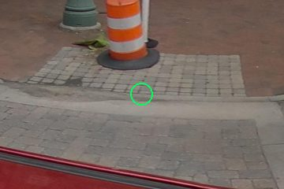
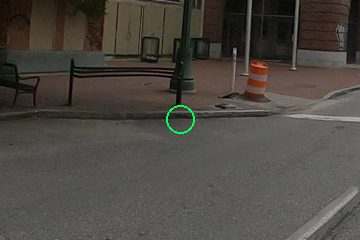
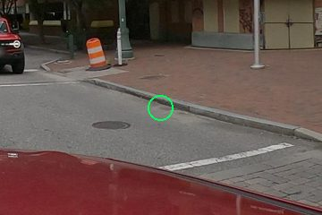


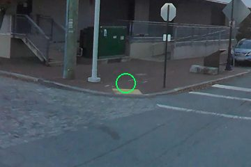
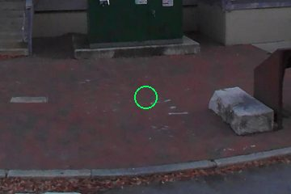
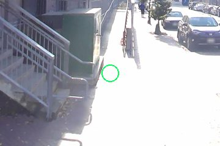
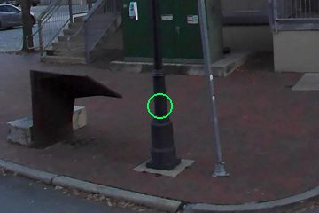
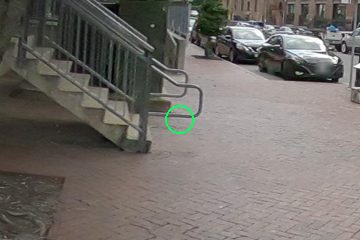

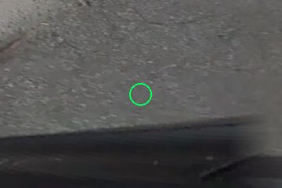
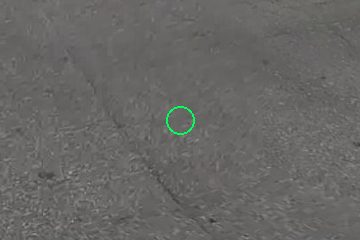
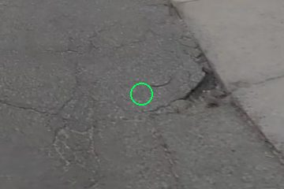
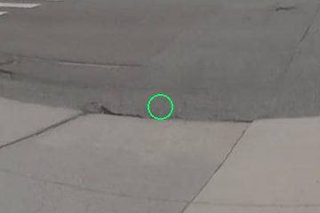

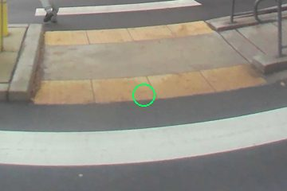
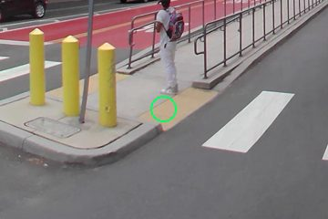
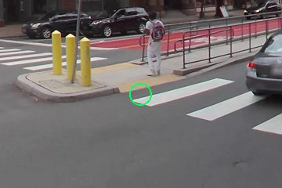
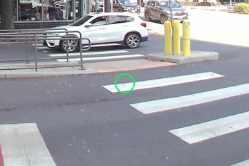
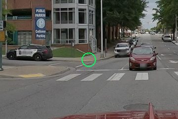
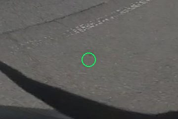
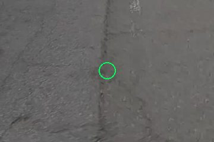
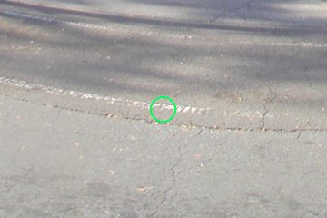
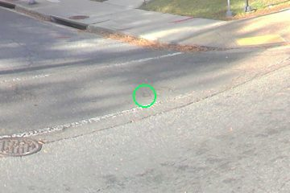
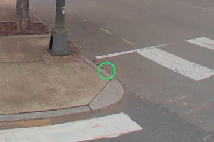
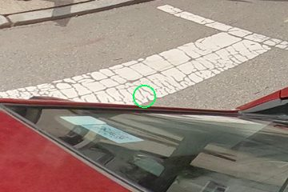
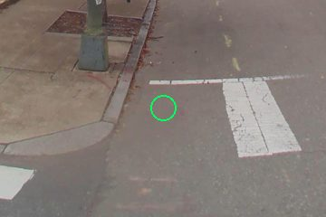
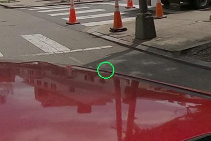
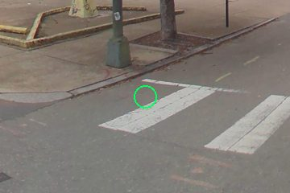
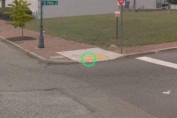
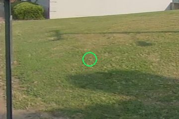
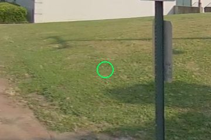
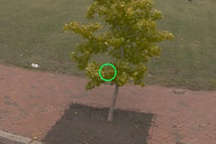
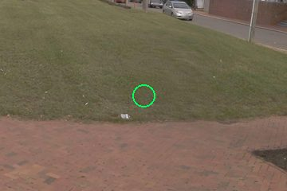

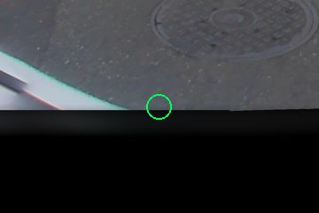
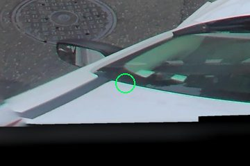
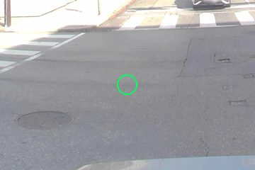
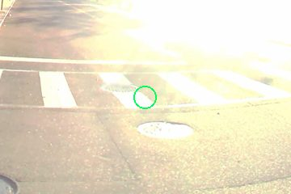

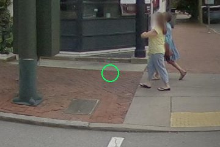
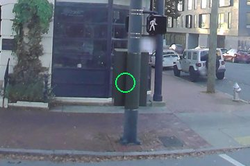
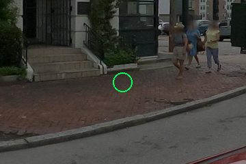
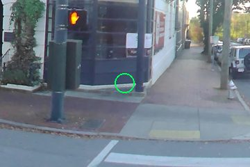


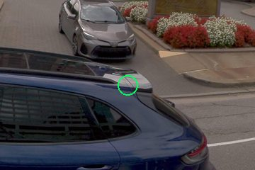
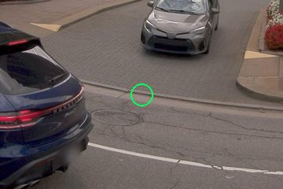
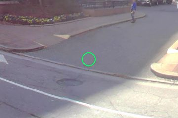
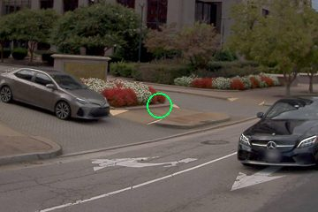
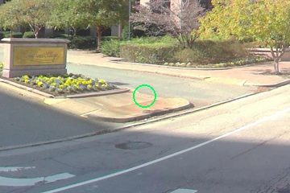
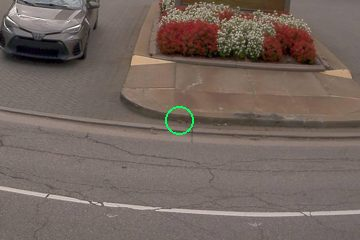
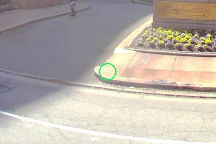
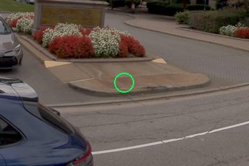
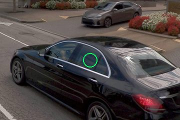